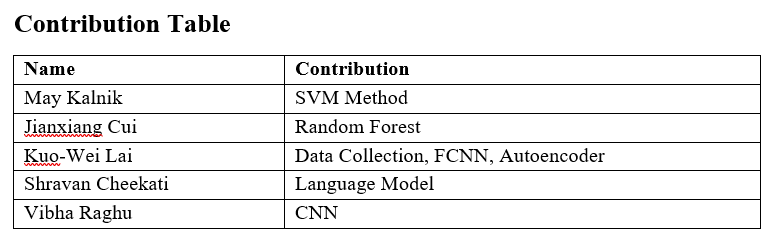

Introduction
YouTube is the world's largest video sharing platform available for creators and businesses to host their content. The trending page is notable for boosting viewership and putting videos in the spotlight for people to like, share, comment, and subscribe to the respective channels.
YouTube Trending Video Kaggle dataset updates top trending videos from 10 countries daily. Up to 200 trending videos per day are provided in the dataset. Features include video title, video id, channel title, publish time, tags, views, likes, dislikes, description, comment count, trending date, thumbnail link, comments disabled, ratings disabled, and video error or removal.
In this project, we aim to build models that can predict whether a video will become a trending video on YouTube. This will allow us to better understand the factors that YouTube considers when deciding which videos to feature on the trending page.
Problem Statement
Content creators on YouTube work to create a trending video in hopes of increasing exposure and earning revenue. YouTube claims that viral videos are based on view count, how fast the views are coming from, where they are coming from etc., but the inner workings of the YouTube Algorithm are known to be unclear and ambiguous.
In this project, we’ll use a one-class classification (OCC) approach to predict possible trending videos on YouTube. We’ll use trending videos’ statistics and the language as features to train different machine learning models, compare each model and create an ensemble method overall.
For this midterm report, we chose to implement two supervised models. A statistical model focused on numericals such as like count, video count, and more. A language model to analyze just the words and feelings expressed by a video creator from their channel and video descriptions.
Data Collection
We utilized existing Youtube trending video dataset from Kaggle and collected Youtube non-trending video data on our own with the Youtube API. Next, we conduct dataset cleaning and split the dataset for train and validation set. We show the dataset preparation procedures in below.
1. Download Youtube Trending Video Dataset from Kaggle
We downloaded the daily updating Youtube trending video dataset from Kaggle. This dataset contains all Youtube trending video statistics from 2020 till today across several countries and regions. In this project, we filter the trending data specifically from the US region
This is a slightly different dataset from our initial proposal. We chose this dataset as it is a much more recent and updated version and gives us more easier ways to pick non trending data without worrying about time series.
Data preprocessing:
For simplicity, we only use those trending data between 2022-12-15 and 2023-03-25. Then, check the status of the video (whether it was removed/copyrighted), remove unnecessary information, and then generate additional features using Youtube's API. Some features we collected include likes and dislikes per day.
2. Collect Youtube Non-Trending Video Data with Youtube API
Next, we used Yotube API v3 to collect non-trending videos in the same timeframe. We download random video statistics and make sure they are not overlapping with data we have in step 1 (therefore, they are not trending videos.) To avoid distribution change, we make sure we collect the video categories also shown in trending videos.
3. Add Number of Channel Subscribers and Split dataset
In the last step, we download number of channel subscriber and we convert discrete feature categoryId into binary features. Finally, we split the overall dataset (trending + non-trending) into train set and validation set in the ratio of 8:2.
Dataset Features
There are 4324 datapoints in train set and 1082 datapoints in validation set. There are a total of 2703 trending and 2703 non-trending video examples. There are 21 feature columns: video id, video title, publish time, channel id, channel Title, video category Id, cate_0, cate_1, cate_2, cate_3, cate_4, number of subscribers, trending date, video tags, views per day, likes per day, dislikes per day, comments per day, video thumbnail, rating, and description. Some of models will use only numerical features, and some of models will use textual features or image to train.
Most of the features are self-explanatory. 'title' and 'channel Title' are two different features because 'title' refers to the video title.
'cate_0' to 'cate_4' are binary features that indicate whether the video belongs to a category. 'views per day', 'likes per day', 'dislikes per day', 'comments per day' are the number of views, likes, dislikes, and comments per day that have been averaged. 'rating' is the ratio of likes to dislikes. 'description' is the video description. 'video thumbnail' is a link to the video thumbnail.
Train DataSet Visualization
We run 2D PCA on train dataset with all numerical features (excluding text features and thumbnails). According to the PCA, we cannot find a general linear classifier in 2d to classify a video is trending or not easily.
Moreover, we might potentially need to use ensemble models including language model using textual feature and CNN model using image to get better performance.
This is the numerical feature correlation table. We can see that views, likes and comments per day have positive relationship.

Data Normalization and preprocessing
For numerical features, we divide like/dislike/comment counts by views and use general z-score standardization to balance the magnitudes of each numerical feature and stabilize model training. For textual features, we first checked for duplicate rows and null values. The data was already clean so there were no problems.
Dropped all columns except for language-related ones (video title, channel title, description, tags), and combined them into a single 'lang' column.
Normalized the subscriber count using a logarithmic transformation (log(1 + num_sub)). The real reason was due to subscriber count having a high range (32 to 239000000) and it was very heavily left-skewed.
Handled missing language values by removing data points empty strings. While we had no null values at the beginning of the dataset. We had some language columns with no content at all. This was removed in preprocessing as they didn't provide any meaning to the video.
After these preprocessing tasks, we further processed each video's language content:
Filtered out punctuations, stopwords, and words missing from our word2vec vocabulary (explained next).
We chose to use spaCy to process our language. After processing and filtering out the language, we need to tokenize the data. All that means is splitting the sentence into a list of seperate words. The sentence would also first be lemmatized (only including the base version of a word). After generating tokens, we need to vectorize it so that a machine learning model can make sense out of our data.
We then transformed the processed text into vectors using the Word2Vec model from the gensim library. We chose Word2Vec due to its ability to preserve the semantic meaning of words in the embeddings. Specifically, the google news 300 api was chosen. Giving us 300 dimensions for each language datapoint. Under a hidden layer, all the vectors were averaged to give us a final np array of 300 values.
Biggest word length video:
This is the distribution of the length of tokens for each video.
We can see most videos have about 100 words that are most meaningful after cutting out random noise.
Methods
Our Dataset preparation and collection has been listed out in the previous section.
In this section, we demonstrate ML models that we used for supervised learning and unsupervised learning tasks. Each model uses different kinds of data features and has its own pros and cons. We want to explore different models on the same task and understand their capabilities in our trending video prediction task.
To create a benchmark and test how things go with our data, we came down to two model implementations that we will be using for our midterm report.
1. Supervised Learning
a. Support Vector Machine (SVM)
This was completed using the sklearn.svm library and using an SBF kernel. The algorithm used is called SVC, or supervised vector classifier, in which we try to find the best hyperplane to divide our data into groups, in our case, trending and non-trending data. The model was trained using 70 percent of the data and validated using the last 30 percent. The features to train this model we included were those with numerical data, including number of subs, the average views per day, average likes per day, average dislikes per day, average comments per day and rating.
b. Random Forest
This was done using sklearn.ensemble.RandomForestClassifier. The model was similarly trained using 70% of the data and validated using the other 30%.
The features used to train this model were the same as the ones used for the SVM model.
c. Fully Connected Neural Network
We designed a simple 3 hidden layers Fully Connected Neural Networks with Relu nonlinearity using only numerical features as input to predict if a video is trending or not. The hidden neurons in each layer are 11, 128, 64. For this supervised binary classification problem, we utilize sigmiod function to predict the probability, and we train the model using Adam optimizer with learning rate 0.001 and 20 epochs.
d. Convolutional Neural Network
In order to implement a CNN the thumbnail images had to be first extracted from the csv files along with their trending or non-trending label and fed into a custom dataset to ensure order of images can be retained. A transformation was then applied to all the images in the dataset so that images can be resized from their original 360x480 to 256x256 pixels. Then the images needed to be normalized such that the distribution of data should reflect a gaussian distribution centered at zero. Visually, this changes the images such that the range of pixels of all the images in the dataset are the same, hence the saturated look.
The CNN used a AlexNet architecture which consists of 5 convolutional layers followed by 3 fully connected layers. After the normalization is applied, 90% of the training set is fed through the CNN and 10% is used to validate at every epoch. Then the validation set is fed through the model as testing data to determine the accuracy of the CNN. The model uses Stochastic Gradient Descent as an optimizer and cross entropy loss for the loss function.
Reference: https://www.mdpi.com/2072-4292/9/8/848
e. Language model
In this model, our goal was to predict whether a YouTube video would become trending or not, focusing on the language features. We started by preprocessing the dataset.
After our preprocessing and feature engineering discussed in the data section, we were now ready to exploit the language features of each video to generate a prediction. For this language model, we first used a very simple net consisting of three fully connected layers and ReLU activation functions in the first two layers. After extending further, we came to the following architecture (refer to the figure).
The architecture consists of the following layers:With the use of dataloaders to save the training and validation datasets, we began training. Specifically, we used BCELogitLoss as our loss function, adam optimizer, learning rate of 0.0001, and a weight decay of 1e-5.1. A fully connected layer with input_size input features and 256 output features, followed by a ReLU activation function with a dropout rate of 0.5.
2. A fully connected layer with 256 input features and 128 output features, followed by a ReLU activation function with a dropout rate of 0.5.
3. A fully connected layer with 128 input features and 64 output features, followed by a ReLU activation function with a dropout rate of 0.5.
4. A fully connected layer with 64 input features and 32 output features, followed by a ReLU activation function with a dropout rate of 0.5.
5. A fully connected layer with 32 input features and 16 output features, followed by a ReLU activation functionwith a dropout rate of 0.5.
6. Finally, a fully connected layer with 16 input features and 1 output feature.
f. Ensemble Model
Finally, we will integrate the prediction results from each model in supervised learning to create an ensemble model by majority voting methods. This model simply inherits each model’s capabilities and takes into account various kinds of features in each data.
1. Unsupervised Learning - One Class Classification
In unsupervised learning, we only use the trending data in the train set and test with the entire validation set including trending and non-trending data. Since we only use one side of the data, we cannot find the separating hyperplane like we do in supervised learning. Therefore, we need to somehow find the distribution of the trending video data.
a. Support Vector Machine (SVM)
One unsupervised learning method that we used was SVM, or support vector machine. In this method, we fed our model training data that we knew were classified as trending. Based on this data, the model worked to sort the validation data into trending and non-trending data. For this model we used only numerical features, which included num subs, views per day, likes per day, dislikes per day, comments per day, rating, and also the video ID. The video ID translated into binary and then split into 5 features (cate 0-4), each feature being a digit of the binary. It was then normalized by dividing the cate 1-4 by cate 0.
b. Autoencoder
We designed an Autoencoder unsupervised model for this task. The input and output have the same shape and during training, we aim to reconstruct the input data and minimize the error between input and output. Overall, we want to learn an autoencoder only works on trending video data, so if we use non-trending video data as input, the reconstructed output will have large error. One key design is we need to add Gaussian noise in the input data to avoid we train our model become a “identity” function. We design our autoencoder with 2 hidden layers with 256 neurons and train with Adam optimizer using learning rate 0.0001 for 10000 epochs.

c. One class Language Model
We also tried an unsupervised approach to the language section. More specifically, a one class neural net that was trained with only the trending data and has never been exposed to non trending data. A very simple architecture was used.
The OneClassNN is a simpler feedforward neural network with three fully connected (dense) layers. It takes an input of size input_size and outputs a single value.
The configuration for training included one-class hinge loss, adam optimizer, and a learning rate of 0.0001.
Source: https://rohanvarma.me/Loss-Functions
Results & Discussion
In this section, we discuss, analyze and compare the result of each model. Here is the overall validation accuracy table and PCA visualization.
We have created a few visualizations to help us understand our data better before and after training.
Boxplots for likes, dislikes, comments, and views for both trending and non-trending data are shown below on a logarithmic scale.
The orange line shows the median and the diagram gives each quartile percentage of values and outliers. Trending data has a notably higher median for likes, dislikes, and comments compared to non-trending data.
Views are very similar between trending and non-trending data, but it is shown that trending videos have a minimum view count, and the first quartile of views is much smaller than the non trending videos boxplot.

Pre-processing
We found better places to put this section such as "Data collection" and "Methods" (for the language model) section . Please refer to those sections for the pre-processing details.
We plan to simply experiment the data with various models and training methods (such as OCC) as the data has already been preprocessed.
Results
Supervised
SVM - Video Statistics
One of the supervised learning methods we were able to implement was our using the SVC algorithm. After fitting our model with 80 percent of our data and validating it with the last 20, we were able to find relatively good results.
We found the accuracy to be about 0.884. Precision was 0.95, indicating that we had very few false positives. Recall was 0.80.
While still a solid score, it indicated that we mislabeled quite a few non-trending as trending (false negatives). This is evident in the graphs that we have visualized below. Finally, F1, which indicates a harmonic mean between precision and recall, was measured to be 0.87.

On the left, you can see the predicted trending/non-trending classifications, while the graph on the right represents the actual classifications.
As you can see the predicted classification heavily underestimated the number of non-trending videos because there is far less pink.
This may indicate that the number of subscribers is perhaps a weaker predictor of likeliness to trend, especially in channels with lower sub counts.
A similar pattern, however, appears with all the other features tested as well as demonstrated below.


The graph below represents our data after a PCA reduction to the 2 most important features (graphed on the x and y axis).
Although we can’t see the actual features, it’s still a good indication to how the SVM performed.
On the left, you can see the predicted classifications, and on the right are the true classifications of the validation data.
Overall, the graphs match well, indicating that the SVM had good accuracy in the predictions.

Random Forest
The random forest classifier was able to achieve an accuracy of 0.91. The precision was 0.98 and the recall was 0.83, indicating that there were very few false positives relative to false negatives. The F1 score was 0.90. Changing the hyperparameters of the random forest classifier had very little effect on the results.
Fully Connected Neural Network (FCNN)
Our Fully Connected Neural Network yields 96% accuracy in validation set after 20 epochs of training. According to the train loss plot, we can see the model starts overfitting after 20 epochs, and this implies our model is capable of this task, and we don’t need to use more complex neural networks.
On the other hand, we also include the result of Fully Connected Neural Network trained with unnormalized data. We can see that since the magnitude of numerical features are not consistent, the training is unstable, and the result is much worse than normalized feature result.
Convolutional Neural Networks (CNN)
The convolutional neural network returned 60-70% accuracy for classifying the thumbnail images. Overfitting was very common as validation increased when training loss decreased. The learning rate and epoch number was adjusted to try to reduce overfitting as much as possible, but accuracy remained constant. It may be difficult to determine if a video is trending just by the thumbnail and other features relating to the video statistics may be required to produce a better accuracy. Alternatively, a different architecture and modification to the CNN may work better than AlexNet if we were to develop more CNN models to train this particular dataset.
Language SVM
Confusion Matrix: 364 True positives, 129 False positives, 62 False Negatives, 449 True Negatives. We have somewhat of a high count of false positives.
This might suggest that the model may be too aggressive in predicting videos as trending.
Precision for non-trending and trending videos are 0.85 and 0.78 respectively. Recall for trending and non-trending videos are 0.74 and 0.88 respectively.
This suggests that the model is more precise in identifying non-trending videos.
Finally, the F1-score for non trending and trending are 0.79 and 0.82 respectively. It shows how model has a balanced view of both sides.
The accuracy was 0.81, which is not too bad considering the fact that we have a high count of false positives. We hope to improve this by approaching other methods of preprocessing.
The fact that word2vec produced similar results suggests that 1. the language model is capable and 2. the title and description of the video play somewhat of a significant factor in whether it becomes trending.
However, considering the fact that it has some trouble identifying negatives (false positives), we can infer that people are getting better and better at actually describing the content in a "trendy" fashion.
Neural Net - Language (PyTorch)
The Language Model yielded very good results. After further optimizing the layers of the neural net and bringing in a more thorough set of layers with dropout, we were able to consistently gather 80% accuracy with this mode.
Initially, the validation accuracy is around 50.9%, which suggests that the might be simply guessing the output class. However, this changes from epoch 8 onwards, and the validation accuracy starts to improve. The model converges after several epochs, and the validation accuracy reaches a peak value of approximately 80.2% (epoch 36). This indicates that the model has learned to classify the input data reasonably well.
There might be some fluctuations in the validation loss and accuracy during the training, which can be expected in a deep learning model, especially when dropout layers are involved.
In summary, the model performed reasonably well, with a peak validation accuracy of 80.2%. The decreasing validation loss over time suggests that the model is generalizing well to the unseen validation data. Maybe there is a significant difference between the language used by trending youtubers compared to non trenders after all.
Ensemble Model
In ensemble model, we combine the prediction result of all five supervised models, and conduct majority voting to determine the final prediction. Although we only get 95.93% accuracy in ensemble model (it’s slightly lower than FCNN), we still expect this model to be more robust to test data since this model considers all types of features. On the other hand, we can also expect to get better accuracy if we can improve some weaker models’ accuracy.
Unsupervised
Support Vector Machine (SVM)
Unfortunately, we were not able to find good results from one-class SVM. We found accuracy to only reach 57.67%, meaning there were a lot of misclassifications. Precision, recall and F1 were all similarly low, with percentages of 57.21%, 45.26% and 50.53%, respectively.
As a visualization, we graphed the accurate and inaccurate classifications based on the 2 most principal components. As you can see, there is really no rhyme or reason that would indicate why something was misclassified.
There are many reasons why this model may have been poor. For one, this model works best when the data is linearly separable, or close to linearly separable. Looking at the graphs below, there is a lot of overlap between the trending and non-trending data in the ground truth graphs for every feature. It would be hard to classify the videos when the trending and non-trending videos have such similar features.
Furthermore, SVM assumes the majority of data belongs to one class. However, our validation had equal separations of trending and non-trending data. As a result, outliers are commonly misclassified. Look specifically the comments per day. As you can see almost all of those with large amounts of comments. are misclassified. This was a trend among many features of the data for this model.
Autoencoder
Our autoencoder model achieves 81% accuracy in this unsupervised one-class classification task. During training, we monitor the MSE reconstruction error of trending video data and non-trending video data. We can see that the average error for trending video data stays around 0.02, and the average error for non-trending video data is above 0.1. Hence, we decided to use 0.02 as a threshold for MSE reconstruction error to determine if an example is trending or not. If the reconstruction error is lower than 0.02, we predict it as a trending video data since the data should have a similar distribution such that our autoencoder and reconstruct the distribution better.
Once our autoencoder is trained on trending video data, we test it with validation set including both trending and non-trending videos. In the plot below, we can clearly see that our trained autoencoder can produce lower MSE reconstruction error for most of the trending video data, but higher error for non-trending video data.
One class Language Model
Similar to the SVM, we did not see any significant results with the one class classification. The model had only seen one side of the picture and when it saw a non-trending datapoint, it was not able to accurately pinpoint what section it belonged to. Upon further inspection of the predictions, the model was only predicting 1.0 which signified that it was only trending no matter what. This was the consequence of only feeding it trending data which made the model learn that every data point is just going to be trending.
We see that the loss decreases severely, and the accuracy is always at 0.5. This makes sense because we have approximately 50-50 trending to not trending data and if the model predicts trending on all data, then it is bound to be correct on 50% of the data.
Conclusions
In this project, we explore different type of ML models using various data features to accomplish Youtube trending video prediction task. Additional to traditional supervised learning approaches, we also conduct unsupervised learning methods to achieve the same goal from a different perspective. At the end, we manage to train different ML models and integrate them into an ensemble model which integrates different type of data features.
Miscellaneous - Contribution & Links
Datasets:
Trending YouTube Video Statistics
Non-trending YouTube Video Statistics Generation
Gantt chart and contribution (OLD - PROPOSAL):
https://gtvault-my.sharepoint.com/:x:/g/personal/scheekati6_gatech_edu/ERfH9NzTvuFGkYxok3T_RdEBF2gpDDYBTjMT9C2OdKL-Pw?e=m6DdKN&nav=MTVfezAwMDAwMDAwLTAwMDEtMDAwMC0wMDAwLTAwMDAwMDAwMDAwMH0
References
Dzhanova, Yelena. “Forget Law School, These Kids Want to Be a YouTube Star.” CNBC, CNBC, 3 Aug. 2019, https://www.cnbc.com/2019/08/02/forget-law-school-these-kids-want-to-be-a-youtube-star.html.
Azami, Zahid Nur Al. “YouTube Trending Videos Data Analysis.” Medium, CodeX, 28 Mar. 2021, https://medium.com/codex/youtube-trending-videos-data-analysis-a340b4a039f9.
“Trending on YouTube - YouTube Help.” Google, Google, https://support.google.com/youtube/answer/7239739?hl=en-IN.
Seliya, Naeem, et al. “A Literature Review on One-Class Classification and Its Potential Applications in Big Data - Journal of Big Data.” SpringerOpen, Springer International Publishing, 10 Sept. 2021, https://journalofbigdata.springeropen.com/articles/10.1186/s40537-021-00514-x%E2%80%8B.
Ruff, Lukas, et al. “Deep One-Class Classification.” PMLR, PMLR, 3 July 2018, https://proceedings.mlr.press/v80/ruff18a.html.
Khan, Shehroz S., and Michael G. Madden. “One-Class Classification: Taxonomy of Study and Review of Techniques: The Knowledge Engineering Review.” Cambridge Core, Cambridge University Press, 24 Jan. 2014, https://www.cambridge.org/core/journals/knowledge-engineering-review/article/oneclass-classification-taxonomy-of-study-and-review-of-techniques/EEDBC97CFD54B2B65BEB5FCD71593782.
[1] Schölkopf, Bernhard, et al. "Support vector method for novelty detection." Advances in neural information processing systems 12 (1999).
[2] Désir, Chesner, et al. "One class random forests." Pattern Recognition 46.12 (2013): 3490-3506.
[3] Ruff, Lukas, et al. "Deep one-class classification." International conference on machine learning. PMLR, 2018.
[4] Manevitz, Larry, and Malik Yousef. "One-class document classification via neural networks." Neurocomputing 70.7-9 (2007): 1466-1481.
[5] Fontenla‐Romero, Oscar, Beatriz Pérez‐Sánchez, and Bertha Guijarro‐Berdiñas. "DSVD‐autoencoder: a scalable distributed privacy‐preserving method for one‐class classification." International Journal of Intelligent Systems 36.1 (2021): 177-199.